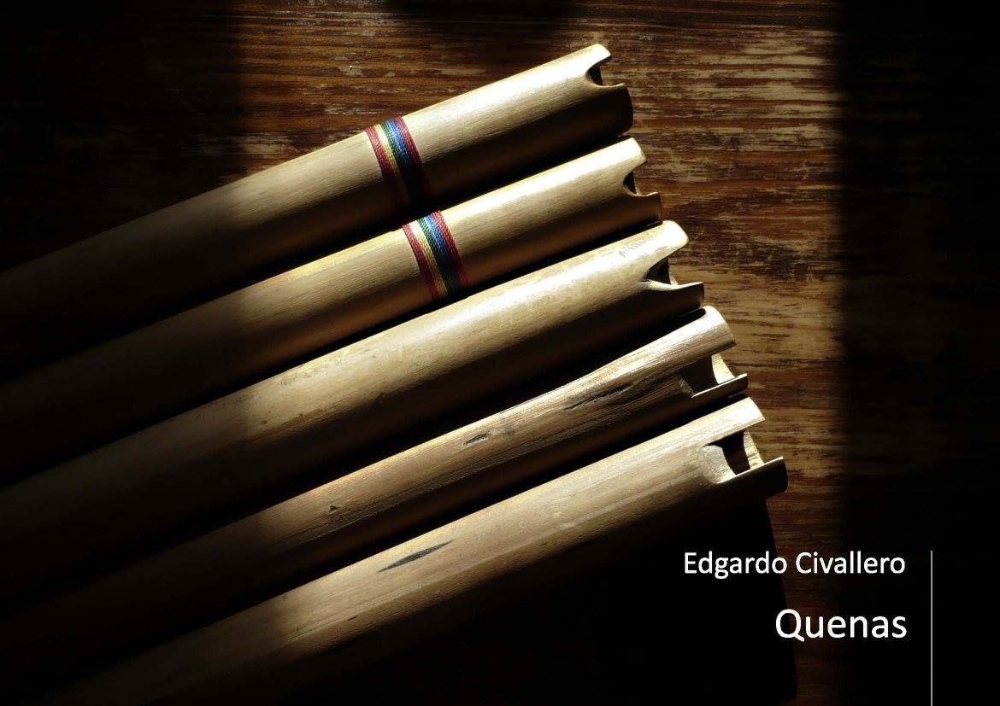

Quenas
Inicio > Libros digitales sobre música. Serie 1 > Quenas
Cómo citar este trabajo: Civallero, Edgardo (2025). Quenas: Un acercamiento inicial. Edición de archivo. Bogotá: El Zorro de Abajo Editora.
Descargar en PDF.
Este libro constituye una investigación rigurosa sobre uno de los instrumentos más emblemáticos del universo sonoro andino. A través de un abordaje organológico, histórico, arqueológico y etnográfico, el texto reconstruye las trayectorias materiales y simbólicas de las flautas sin canal de insuflación que han acompañado, durante siglos, las expresiones rituales, agrícolas y festivas de las comunidades andinas. El trabajo, sustentado en una amplia documentación bibliográfica y de campo, ofrece un panorama que abarca desde los vestigios prehispánicos más antiguos hasta las variantes contemporáneas de quenas profesionales y campesinas.
La quena —también denominada qina, kena, khena o k'ena— se define como una flauta vertical abierta, sin aeroducto, que produce el sonido al dirigir el soplo sobre un bisel tallado directamente en la embocadura. Se trata de un instrumento que exige una técnica precisa, basada en el control del aire y de la embocadura, y que permite una expresividad muy amplia, desde tonos ásperos y temblorosos hasta registros limpios y penetrantes. Su cuerpo, generalmente construido con caña, puede tener entre cuatro y ocho orificios de digitación, y una longitud variable de veinte a cuarenta centímetros. Los ejemplares más largos, de cuarenta o cincuenta centímetros, producen tonos graves y sonoros, mientras que los más cortos alcanzan registros agudos y brillantes.
El estudio profundiza en los orígenes históricos del instrumento y demuestra que las quenas existían en América miles de años antes de la llegada europea. Se examinan los hallazgos arqueológicos de flautas precolombinas de hueso, cerámica, piedra, oro o madera en contextos Chavín, Nazca, Recuay, Tiwanaku, Sicán, Chimú y Chincha, y se muestra que, aunque los biseles y las digitaciones varían, todos responden a un mismo principio técnico: la producción directa del sonido por el contacto del aire con un borde afilado. Se revisan las primeras menciones documentales del instrumento en el siglo XVII: Ludovico Bertonio (1612) define el término quena quena en su Vocabulario de la lengua aymara; Guamán Poma de Ayala y Bernabé Cobo la registran como flauta de canto y de lamento; y las crónicas de viajeros de los siglos XVIII y XIX describen su presencia en festividades rurales y danzas agrícolas.
Se analizan luego las distintas familias de quenas tradicionales y contemporáneas. Las grandes quenas incluyen a los conjuntos aymaras del altiplano boliviano y peruano: pusipías, choquelas, lichiguayos y quena quenas. Son flautas de gran tamaño, acompañadas por bombos wank'ara y ejecutadas en tropas. Sus melodías, compuestas de intervalos amplios y reiterativos, generan una textura coral, donde cada flautista aporta una voz dentro del tejido sonoro colectivo. En el extremo opuesto, las quenas pequeñas, difundidas desde Potosí hasta Cusco y Huamanga, conservan afinaciones locales no temperadas y se interpretan en contextos agrícolas, ganaderos o funerarios. Cada variante responde a un entorno ecológico específico: la karhuani o quena de los llameros paceños, la viticheña de los valles potosinos, la lawata de Cusco, la phalawata de Canchis o la yura de Potosí son instrumentos únicos, ligados a danzas y ceremonias que marcan el calendario agrícola.
El texto aborda también las transformaciones modernas del instrumento. Desde mediados del siglo XX, la quena se ha incorporado a la música popular, al folklore comercial y a la música académica. Las quenas estandarizadas en Sol mayor o La mayor, con medidas fijas y digitaciones cromáticas, se consolidaron como instrumentos "profesionales", adaptados a la escala temperada occidental. Se comparan estas quenas contemporáneas con las tradicionales, señalando que la precisión acústica y la versatilidad técnica adquiridas implicaron, sin embargo, una pérdida simbólica y ritual. Mientras las quenas campesinas siguen siendo instrumentos cíclicos, ligados al clima y al territorio, las profesionales son objetos estables, despojados de temporalidad y contexto. Esa tensión entre utilidad musical y sentido comunitario define el conflicto moderno de la cultura andina frente a la globalización.
Finalmente, el libro analiza las extensiones de la familia: el quenacho, versión grave afinada en Do o Re mayor; la mamaquena, de registro aún más bajo; y la quenilla o quenali, su contraparte aguda. Todas mantienen la morfología básica, pero adaptan el instrumento a distintos repertorios y escalas.
La quena no es solo una flauta, sino un lenguaje y una forma de conocimiento, una tecnología del soplo que traduce el vínculo entre cuerpo, paisaje y cosmos. Su historia encarna la persistencia de una estética sonora propia del mundo andino, en la que el aire se convierte en medio de comunicación entre la tierra y el cielo, y donde cada nota es una forma de recordar, invocar y resistir.